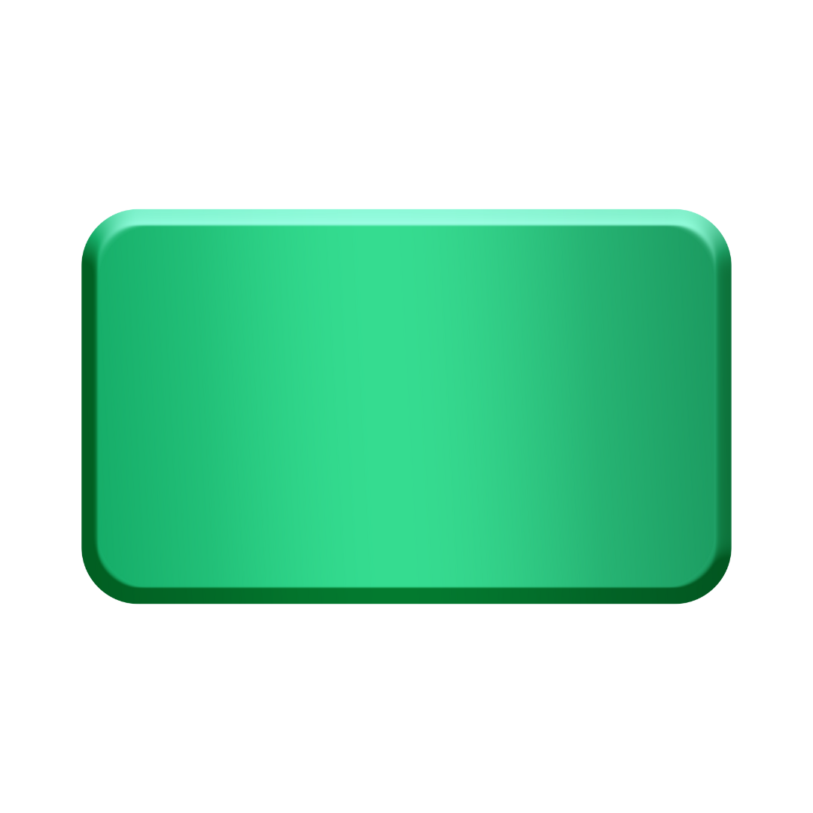
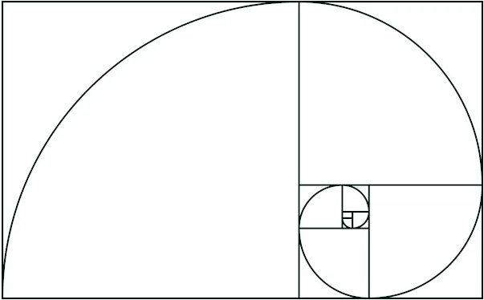

Retângulo
O retângulo é uma figura geométrica plana formada por quatro lados (quadrilátero) e apresenta os quatro ângulos internos congruentes (mesma medida) e retos (90°).
Além disso, seus lados opostos são paralelos, por isso, o retângulo é um paralelogramo. Quando seus lados tiverem mesma medida, ele também será um quadrado. Ou seja, um quadrado é um retângulo especial.
Área do retângulo
Para encontrar a área da superfície de um retângulo, basta multiplicar o valor da base pelo da altura.
Assim, a fórmula da área do retângulo é expressa da seguinte forma:
A = b.h
Onde,
A: área
b: base
h: altura
Retângulo Áureo
O retângulo áureo, conhecido também como retângulo de ouro, é bastante admirado pelos matemáticos, arquitetos e artistas. Ele é assim conhecido por ter a proporção áurea. Perceber a existência da proporção áurea em quadros e construções artísticas é bastante comum. Muitas vezes essa proporção é relacionada com objetos considerados belos, pela harmônia que ela preserva. Quando dividimos o retângulo, para que ele seja considerado áureo, temos que:
Quando o retângulo é áureo, a proporção entre os seus lados é de 1 para, aproximadamente, 1,618, aproximando-se do número irracional Φ = 1,61803398875…